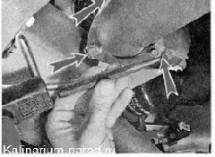
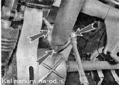
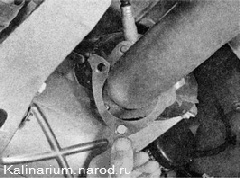
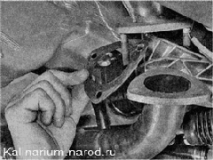
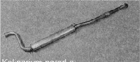

Дополнительный глушитель - заменаДля выполнения работы потребуется смотровая канава или эстакада. Снятие 1. Подготавливаем автомобиль к выполнению работы. Внимание: Во избежание получения ожогов работу следует выполнять после остывания деталей системы выпуска отработавших газов до безопасной температуры. 2. Отсоединяем фланец основного глушителя от дополнительного. 3. Отгибаем три кромки стопорной пластины.  4. Торцовым ключом на 13 мм отворачиваем три гайки крепления приемной трубы к каталитическому коллектору.  5. Снимаем стопорную пластину. 6. Отводим приемную трубу дополнительного глушителя от фланца каталитического коллектора и снимаем уплотнительную прокладку. 7. Отсоединяем две подушки подвески от кронштейнов дополнительного глушителя (см. «Подвеска системы выпуска отработавших газов — замена подушек») и снимаем дополнительный глушитель.  Установка Устанавливаем дополнительный глушитель в обратной последовательности, заменив прокладку новой. При необходимости заменяем поврежденные или потерявшие эластичность подушки подвески глушителя, а также неисправные скобы хомута и детали резьбовых соединений. |